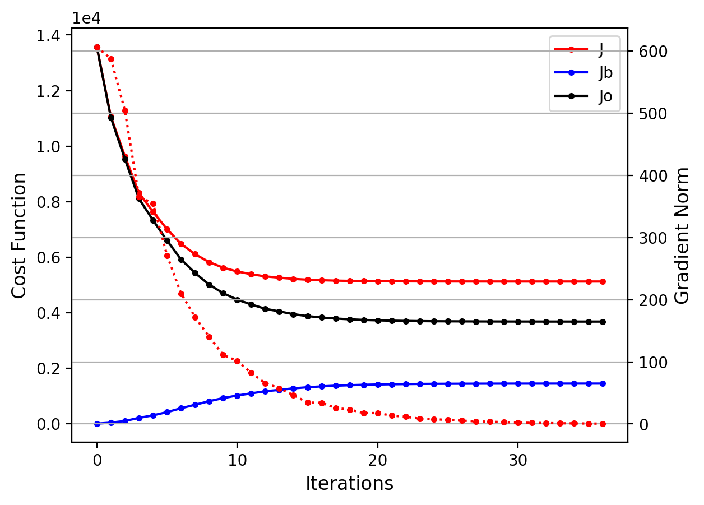

This web page is intended to serve as a guide through the hands-on practical exercises within the
initial training course on MPAS-JEDI, which is aimed at participants within the Climate and Weather
Research Alliance Singapore (CAWRAS).
The exercises are split into 5 main sections, each focusing on a specific aspect
of using the MPAS-JEDI data assimilation system.
The test dataset is available under ASPIRE 2A under the CAWRAS project folder
/home/project/13004327/training_service/2026-MPAS-JEDI.
You can proceed through the sections of this practical guide at your own pace. It is highly recommended
to go through the exercises in order, since later exercises may require the output of earlier ones.
Clicking the grey headers will expand each section or subsection.
The practical exercises in this tutorial have been tailored to work on
the NSCC ASPIRE 2A system.
ASPIRE 2A is an HPC cluster that provides most of the libraries needed by MPAS-JEDI and its pre- and post-processing
tools through modules. In general, before compiling and running MPAS-JEDI on your own system,
you will need to install spack-stack.
However, this tutorial does not cover the installation of spack-stack, which was pre-installed on ASPIRE 2A.
MPAS-JEDI code build for this tutorial is based upon spack-stack-1.8.0.
Before logging in to ASPIRE 2A, you need to set up your vpn to access NSCC HPC systems. Please follow the
NSCC instructions.
After setting up the VPN, log in to Aspire2a from your laptop or desktop by
$ ssh -Y <userid>@aspire2a.nscc.sg
For NUS, NTU, A*STAR, and SUTD users, please log in to ASPIRE 2A following the instructions.
You will be required to type your userid and password to get onto ASPIRE 2A. It is recommended to log in to ASPIRE 2A using multiple terminals, each for a different
task.
After log in, you will be in your home directory:
$ pwd
The command above will display the current working directory (your home directory after login). However, the home directory
usually has very limited disk space, so it is recommended to perform all exercises under your scratch directory.
You can set an environment variable for your scratch directory as follows:
$ export SCRATCH=${HOME/home/scratch}
WARNING: You may need to setup $SCRATCH every time you start a new terminal.
You will run all of the practical exercises in your own scratch space, and you can check whether it is properly
set by entering
echo $SCRATCH.
Navigate to your scratch directory:
$ cd $SCRATCH
Then, create a working directory for the training exercises and move into it:
$ mkdir MPAS-JEDI-Training
$ cd MPAS-JEDI-Training
All of the training datasets are located under /home/project/13004327/training_service/2026-MPAS-JEDI.
Due to IO limititations, we recommend that you link them into your working directory:
$ ln -fs /home/project/13004327/training_service/2026-MPAS-JEDI/OBS_FILE .
$ ln -fs /home/project/13004327/training_service/2026-MPAS-JEDI/MPAS_FILE .
$ ln -fs /home/project/13004327/training_service/2026-MPAS-JEDI/BEC_FILE .
$ ln -fs /home/project/13004327/training_service/2026-MPAS-JEDI/MPASJEDI_FILE .
$ ln -fs /home/project/13004327/training_service/2026-MPAS-JEDI/Graphics .
$ ln -fs /home/project/13004327/training_service/2026-MPAS-JEDI/SINGV-NG-1.0 .
$ ln -fs /home/project/13004327/training_service/2026-MPAS-JEDI/OBS2IODA .
Now, under your working directory, you will have these folders:
- OBS_FILE - Observation-related files, such as observation data in BUFR and IODA formats, CRTM coefficients, and bias correction files.
- MPAS_FILE - MPAS model-related files, such as MPAS forecast (as background), ensemble forecasts, MPAS grid files, and MPAS namelist and stream files.
- BEC_FILE - Background error covariance (BEC) files, including ensemble-BEC localization matrix and static BEC files.
- MPASJEDI_FILE - YAML and job script files for running MPAS-JEDI applications.
- Graphics - Python scripts for visualization.
- SINGV-NG-1.0 - Source code and compiled executables for MPAS-JEDI (CCRS version).
- OBS2IODA - Source code and compiled executables for the obs2ioda observation convector.
On ASPIRE 2A, the default shell is bash.
ASPIRE 2A uses the LMOD package to manage the software environment.
Run module list to see what modules are loaded by default
right after you log in.
The output is something similar to that below:
$ module list
Currently Loaded Modulefiles:
1) craype-x86-rome 3) craype-network-ofi 5) cce/13.0.2 7) cray-dsmml/0.2.2 9) cray-libsci/21.08.1.2 11) PrgEnv-cray/8.3.3
2) libfabric/1.11.0.4.125 4) perftools-base/22.04.0 6) craype/2.7.15 8) cray-mpich/8.1.15 10) cray-pals/1.1.6
Post-processing and graphics exercises will need Python. A Conda environment with the required Python libraries is available,
and can be activated by running the following command:
$ module purge
$ module load miniforge3/25.3.1
$ conda activate /home/project/13004327/software_service/conda_envs/MPAS-JEDI-Training
Running jobs on ASPIRE 2A requires the submission of a job script to a batch queueing system,
which will allocate requested computing resources to your job when they become available.
In general, it's best to avoid running any compute-intensive jobs on the login nodes.
The practical instructions to follow will guide you through the process of submitting jobs when
necessary.
As a first introduction to running jobs on ASPIRE 2A, there are several key commands worth
noting:
- qsub job-script - This command submits a PBS job script, which describes a job
to be run on one or more batch nodes.
- qstat -u $USER - This command tells you the status of your pending and running jobs.
Note that you may need to wait about 30 seconds for a recently submitted job to show up.
- qdel JobID - This command deletes a queued or running job.
Throughout this training course, you will submit your jobs to a dedicated queue
R13547281 with the project number
53010008.
After the training, please remember to submit to the regular queues using your own project
number.
At various points in the practical exercises, you will need to submit jobs to
ASPIRE 2A's queueing system
using the qsub command.
After doing so, you may check on the status of the job using the
qstat command, or by monitoring the log files
produced by the job after seeing that the job has begun to run.
Most exercises will run on one ASPIRE 2A node, which
has 128 cores and 440 GB available memory.
You're now ready to begin with the practical exercises of this training course!
This section explains how to obtain and compile the MPAS-JEDI code, and run
installation tests, through a cmake/ctest mechanism.
Due to the heavy load on I/O and network bandwidth, please do not
configure or compile the MPAS-JEDI code, or run installation tests during
the training course. Instead, please set an environment variable named
bundle_dir that points to a directory containing pre-compiled executables:
$ export bundle_dir=/home/project/13004327/training_service/2026-MPAS-JEDI/SINGV-NG-1.0/build
In order to build MPAS-JEDI and its dependencies, it is recommended to obtain
the source code from mpas-bundle.
We will use the 'SINGV-NG-1.0' branch from SINGV-NG-1.0:
$ cd ${SCRATCH}/MPAS-JEDI-Training
$ mkdir MPAS-BUNDLE
$ cd MPAS-BUNDLE
$ git clone -b SINGV-NG-1.0 https://github.com/mos3r3n/mpas-bundle code
The git command will clone the mpas-bundle repository from GitHub to a local directory 'code',
and then make the 'SINGV-NG-1.0' branch the active branch. The terminal output should look like
the following:
Cloning into 'code'...
remote: Enumerating objects: 436, done.
remote: Counting objects: 100% (73/73), done.
remote: Compressing objects: 100% (35/35), done.
remote: Total 436 (delta 55), reused 43 (delta 38), pack-reused 363 (from 1)
Receiving objects: 100% (436/436), 144.95 KiB | 3.54 MiB/s, done.
Resolving deltas: 100% (267/267), done.
Note that the mpas-bundle repository does not contain actual source code.
Instead, the CMakeLists.txt file under code includes the GitHub branch/tag
information of the repositories needed to build MPAS-JEDI.
One important difference from previous mpas-bundle releases (1.0.0, 2.0.0, and 3.0.x) is
that the SINGV-NG-1.0 bundle works together with a special version of the MPAS-A model code from
MPAS-SINGVNG. Also, some
enhancements have been applied to the MPAS-JEDI DA system.
Now load the spack-stack pre-built environment for the GNU compiler:
$ source code/env-setup/gnu-aspire2a.sh
$ module list
The output from the 'module list' command in the terminal should then look like
the following (45 modules!!!).
Currently Loaded Modulefiles:
1) craype-x86-milan 16) sqlite/3.43.2 31) curl/8.7.1
2) craype/2.7.15 17) util-linux-uuid/2.38.1 32) hdf5/1.14.3
3) libfabric/1.11.0.4.125 18) python/3.11.7 33) netcdf-c/4.9.2
4) cray-pals/1.1.6 19) stack-python/3.11.7 34) netcdf-cxx4/4.3.1
5) gcc/11.2.0 20) boost/1.84.0 35) netcdf-fortran/4.6.1
6) cray-mpich/8.1.15 21) eckit/1.25.2 36) parallel-netcdf/1.12.3
7) stack-gcc/11.2.0 22) eigen/3.4.0 37) parallelio/2.6.2
8) stack-cray-mpich/8.1.15 23) fckit/0.11.0 38) jedi-cmake/1.4.0
9) glibc/2.28 24) fftw/3.3.10 39) cmake/3.31.3
10) zlib-ng/2.1.6 25) ecmwf-atlas/0.36.0 40) ecbuild/3.7.2
11) pigz/2.8 26) gptl/8.1.1 41) python-venv/1.0
12) zstd/1.5.2 27) gsl-lite/0.37.0 42) py-setuptools/63.4.3
13) tar/1.34 28) snappy/1.1.10 43) py-pycodestyle/2.11.0
14) gettext/0.22.5 29) c-blosc/1.21.5 44) udunits/2.2.28
15) libxcrypt/4.4.35 30) nghttp2/1.57.0 45) nccmp/1.9.0.1
(These packages are from the pre-installed spack-stack-1.8.0.)
WARNING: You may encounter the following issue:
ModuleCmd_List.c(170):FATAL:997: The environment variables LOADEDMODULES and _LMFILES_ have inconsistent lengths.
You can resolve this by sourcing the environment bash file again.
Now you are ready to 'fetch' actual source code from GitHub repositories through cmake.
WARNING: Again, please do not run the commands in this
section during the course.
MPAS-JEDI uses cmake to automatically fetch the code from various GitHub repositories,
listed in CMakeLists.txt under the code directory. Now type the command below under
${SCRATCH}/MPAS-JEDI-Training/MPAS-BUNDLE:
$ git lfs install
$ mkdir build
$ cd build
$ cmake ../code
After it completes (it may take 15-20 min depending on the network connection), you will see the actual source code of various
repositories (e.g., oops, vader, saber, ufo, ioda, crtm, mpas-jedi, and MPAS) is now under the code directory.
Meanwhile, Makefile files to build executables are generated under the build directory.
Now it is possible to compile MPAS-JEDI under 'build' using the standard make program. Commonly, we don't compile MPAS-JEDI on the login node.
Instead, we do it by submitting an interactive job as the following
$ qsub -I -l select=1:ncpus=4:mem=32gb -l walltime=01:00:00 -P 53010008 -q R13547281
Then, your job will queue, and you will log in to the compute node you are assigned when it is ready
qsub: waiting for job 13405681.pbs101 to start
qsub: job 13405681.pbs101 ready
On the compute node, you need to re-activate the spack-stack environment first and then do "make".
$ source ${SCRATCH}/MPAS-JEDI-Training/MPAS-BUNDLE/code/env-setup/gnu-aspire2a.sh
$ make -j4
This could take ~25 min. Using more cores for build could speed up a bit, but will not help too much from our experience.
Also note that the reason we do the cmake step (will clone various GitHub repositories) on the login
node instead of a compute node is that ASPIRE 2A's compute nodes have a much slower internet connection.
TIP: The compilation could take ~25 min to complete. You may continue to read instructions while waiting.
Once you reach 100% of the compilation, many executables will be generated under build/bin.
Related executables of the MPAS model and MPAS-JEDI include:
$ ls bin/mpas*
bin/mpas_atmosphere bin/mpasjedi_enkf.x bin/mpasjedi_hofx3d.x bin/mpas_namelist_gen
bin/mpas_atmosphere_build_tables bin/mpasjedi_enshofx.x bin/mpasjedi_hofx.x bin/mpas_parse_atmosphere
bin/mpas_init_atmosphere bin/mpasjedi_ens_mean_variance.x bin/mpasjedi_process_perts.x bin/mpas_parse_init_atmosphere
bin/mpasjedi_convertstate.x bin/mpasjedi_error_covariance_toolbox.x bin/mpasjedi_rtpp.x bin/mpas_streams_gen
bin/mpasjedi_converttostructuredgrid.x bin/mpasjedi_forecast.x bin/mpasjedi_saca.x
bin/mpasjedi_eda.x bin/mpasjedi_gen_ens_pert_B.x bin/mpasjedi_variational.x
The last step is to ensure that the code was compiled properly by running the MPAS-JEDI ctests,
with two lines of simple command:
$ export LD_LIBRARY_PATH=${SCRATCH}/MPAS-JEDI-Training/MPAS-BUNDLE/build/lib:$LD_LIBRARY_PATH
$ cd mpas-jedi
$ ctest
At the moment the tests are running (take ~5 min to finish), it indicates if it passes or fails.
At the end, a summary is provided with a percentage of the tests that passed, failed, and the processing times.
The output to the terminal should look as the following:
......
100% tests passed, 0 tests failed out of 59
Label Time Summary:
executable = 18.76 sec*proc (13 tests)
mpasjedi = 237.40 sec*proc (59 tests)
mpi = 235.68 sec*proc (56 tests)
script = 218.64 sec*proc (44 tests)
Total Test time (real) = 237.49 sec
WARNING:You could run ctest just under the 'build' directory, but that will run a total of 2159 ctest cases for all
component packages (oops, vader, saber, ufo, ioda, crtm, mpas-jedi etc.) in mpas-bundle, which will take much longer time.
Maybe something you can play with after this tutorial.
You may use 'ctest -N, which will only list names of ctest cases, but not run them).
To determine if a test passes or fails, a comparison of the test log and reference file is done internally taking as reference a tolerance value. This tolerance is specified via YAML file. These files can be found under mpas-jedi/test/testoutput in the build folder:
3denvar_2stream_bumploc.ref 4denvar_ID.run ens_mean_variance.run.ref
3denvar_2stream_bumploc.run 4denvar_ID.run.ref forecast.ref
3denvar_2stream_bumploc.run.ref 4denvar_VarBC_nonpar.run forecast.run
3denvar_amsua_allsky.ref 4denvar_VarBC_nonpar.run.ref forecast.run.ref
3denvar_amsua_allsky.run 4denvar_VarBC.ref gen_ens_pert_B.ref
3denvar_amsua_allsky.run.ref 4denvar_VarBC.run gen_ens_pert_B.run
3denvar_amsua_bc.ref 4denvar_VarBC.run.ref gen_ens_pert_B.run.ref
3denvar_amsua_bc.run 4dfgat.ref hofx3d_nbam.ref
3denvar_amsua_bc.run.ref 4dfgat.run hofx3d_nbam.run
3denvar_bumploc.ref 4dfgat.run.ref hofx3d_nbam.run.ref
3denvar_bumploc.run 4dhybrid_bumpcov_bumploc.ref hofx3d.ref
3denvar_bumploc.run.ref 4dhybrid_bumpcov_bumploc.run hofx3d_ropp.ref
3denvar_dual_resolution.ref 4dhybrid_bumpcov_bumploc.run.ref hofx3d_rttovcpp.ref
3denvar_dual_resolution.run convertstate_bumpinterp.ref hofx3d.run
3denvar_dual_resolution.run.ref convertstate_bumpinterp.run hofx3d.run.ref
3dfgat_pseudo.ref convertstate_bumpinterp.run.ref hofx4d_pseudo.ref
3dfgat_pseudo.run convertstate_unsinterp.ref hofx4d_pseudo.run
3dfgat_pseudo.run.ref convertstate_unsinterp.run hofx4d_pseudo.run.ref
3dfgat.ref convertstate_unsinterp.run.ref hofx4d.ref
3dfgat.run converttostructuredgrid_latlon.ref hofx4d.run
3dfgat.run.ref converttostructuredgrid_latlon.run hofx4d.run.ref
3dhybrid_bumpcov_bumploc.ref converttostructuredgrid_latlon.run.ref letkf_3dloc.ref
3dhybrid_bumpcov_bumploc.run dirac_bumpcov.ref letkf_3dloc.run
3dhybrid_bumpcov_bumploc.run.ref dirac_bumpcov.run letkf_3dloc.run.ref
3dvar_bumpcov_nbam.ref dirac_bumpcov.run.ref lgetkf_height_vloc.ref
3dvar_bumpcov_nbam.run dirac_bumploc.ref lgetkf_height_vloc.run
3dvar_bumpcov_nbam.run.ref dirac_bumploc.run lgetkf_height_vloc.run.ref
3dvar_bumpcov.ref dirac_bumploc.run.ref lgetkf.ref
3dvar_bumpcov_ropp.ref dirac_noloc.ref lgetkf.run
3dvar_bumpcov_rttovcpp.ref dirac_noloc.run lgetkf.run.ref
3dvar_bumpcov.run dirac_noloc.run.ref parameters_bumpcov.ref
3dvar_bumpcov.run.ref dirac_spectral_1.ref parameters_bumpcov.run
3dvar.ref dirac_spectral_1.run parameters_bumpcov.run.ref
3dvar.run dirac_spectral_1.run.ref parameters_bumploc.ref
3dvar.run.ref eda_3dhybrid.ref parameters_bumploc.run
4denvar_bumploc.ref eda_3dhybrid.run parameters_bumploc.run.ref
4denvar_bumploc.run eda_3dhybrid.run.ref rtpp.ref
4denvar_bumploc.run.ref ens_mean_variance.ref rtpp.run
4denvar_ID.ref ens_mean_variance.run rtpp.run.ref
After running ctest, you can terminate your interactive job by simply typing 'exit' or by:
$ qstat -u $USER
$ qdel job-id-number
The qstat command will return your job ID in a form of 'job-id-number.pbs101'.
The qdel command will kill your interactive job by only supplying 'job-id-number'.
Note that the tutorial test cases are designed with single-precision MPAS model test dataset.
The pre-compiled mpas-bundle code with single-precision mode can be found under
/home/project/13004327/training_service/2026-MPAS-JEDI/SINGV-NG-1.0/
Tutorial attendees should use this pre-build bundle for mpas-jedi practicals and should
set an environment variable 'bundle_dir' for convenience in the subsequent practices.
$ export bundle_dir=/home/project/13004327/training_service/2026-MPAS-JEDI/SINGV-NG-1.0/build
The goal of this exercise is to create the observation input files needed for running
MPAS-JEDI test cases.
Under the MPAS-JEDI-Training directory,
create a directory for converting NCEP BUFR observations into IODA-HDF5 format.
Then, clone the obs2ioda repository and proceed to compile the converter.
$ cd ${SCRATCH}/MPAS-JEDI-Training
$ git clone https://github.com/NCAR/obs2ioda
$ cd obs2ioda
To compile obs2ioda_v3, some libraries are required:
NETCDF-C and NETCDF-Fortran libraries, and the NCEP BUFR library
(
https://github.com/NOAA-EMC/NCEPLIBS-bufr).
Here, we will use a pre-built NCEP BUFR library. The library is referenced
by NCEP_BUFR_LIB in
Makefile, and the value of NCEP_BUFR_LIB is
specified via the cmake command.
Load the spack-stack modules, and then compile the converter by using
the make command:
$ source /home/project/13004327/training_service/2026-MPAS-JEDI/SINGV-NG-1.0/code/env-setup/gnu-aspire2a.sh
$ mkdir build
$ cd build
$ cmake .. -DNCEP_BUFR_LIB=/data/projects/13004327/software_service/spack-stack/1.8-mos3r3n/envs/mpas-bundle/install/gcc/11.2.0/bufr-12.1.0-eemymeq/lib64/libbufr_4.so
$ make
If the compilation is successful, the executable file obs2ioda_v3 will be generated under build/bin.
The NCEP BUFR input files are under the existing OBS_FILE/BUFR folder. Now we
will convert the bufr-format data into the iodav2-hdf5 format under a new
directory OBS_IODA.
$ cd ${SCRATCH}/MPAS-JEDI-Training
$ mkdir OBS_IODA
$ cd OBS_IODA
Link the PREPBUFR/BUFR files to the working directory:
$ ln -fs ${SCRATCH}/MPAS-JEDI-Training/OBS_FILE/BUFR/prepbufr.gdas.20240917.t12z.nr.48h .
$ ln -fs ${SCRATCH}/MPAS-JEDI-Training/OBS_FILE/BUFR/gdas.1bamua.t12z.20240917.bufr .
$ ln -fs ${SCRATCH}/MPAS-JEDI-Training/OBS_FILE/BUFR/gdas.gpsro.t12z.20240917.bufr .
$ ln -fs ${SCRATCH}/MPAS-JEDI-Training/OBS_FILE/BUFR/gdas.1bmhs.t12z.20240917.bufr .
Link executables and files:
$ ln -fs ${SCRATCH}/MPAS-JEDI-Training/obs2ioda/build/bin/obs2ioda_v3 .
Now you can run obs2ioda_v3.
The usage is:
$ ./obs2ioda_v3 [-i input_dir] [-o output_dir] [bufr_filename(s)_to_convert]
If input_dir and output_dir are not specified, the default is the current working directory.
If bufr_filename(s)_to_convert is not specified, the code looks for files in the input/working
directory which have the following filename patterns: **prepbufr.bufr**, **gpsro.bufr**,
**amsua.bufr**, **mhs.bufr**,
All files matching the patterns are converted.
$ source /home/project/13004327/training_service/2026-MPAS-JEDI/SINGV-NG-1.0/code/env-setup/gnu-aspire2a.sh
$ ./obs2ioda_v3 prepbufr.gdas.20240917.t12z.nr.48h
$ ./obs2ioda_v3 gdas.gpsro.t12z.20240917.bufr
$ ./obs2ioda_v3 gdas.1bamua.t12z.20240917.bufr
$ ./obs2ioda_v3 gdas.1bmhs.t12z.20240917.bufr
The OBS_IODA directory should now contain the following IODA-format files.
aircraft_obs_2024091712.h5 amsua_n19_obs_2024091712.h5 mhs_n19_obs_2024091712.h5
amsua_metop-b_obs_2024091712.h5 ascat_obs_2024091712.h5 satwind_obs_2024091712.h5
amsua_metop-c_obs_2024091712.h5 gnssro_obs_2024091712.h5 sfc_obs_2024091712.h5
amsua_n15_obs_2024091712.h5 mhs_metop-b_obs_2024091712.h5 sondes_obs_2024091712.h5
amsua_n18_obs_2024091712.h5 mhs_metop-c_obs_2024091712.h5
These files will be used later by some of the MPAS-JEDI tests.
First, make sure the Python environment required for plotting is set up. Otherwise, set it up as follows:
$ module purge
$ module load miniforge3/25.3.1
$ conda activate /home/project/13004327/software_service/conda_envs/MPAS-JEDI-Training
Next, copy the plotting script to the current directory, and then run it:
$ cp -r ${SCRATCH}/MPAS-JEDI-Training/Graphics/plot_obs_singv.py .
$ python plot_obs_singv.py
The command will create many figures. An example figure is shown below.

In this session, we will be running an application called 𝐻(𝐱), which maps model states to observation space.
First, create an HofX directory under the MPAS-JEDI-Training directory as follows:
$ cd ${SCRATCH}/MPAS-JEDI-Training
$ mkdir HofX
$ cd HofX
Then, set an environment variable that points to the mpas-bundle directory
$ export bundle_dir=/home/project/13004327/training_service/2026-MPAS-JEDI/SINGV-NG-1.0/build
Now, we need to prepare input files to run HofX.
The following commands are for linking physics-related data and tables, and MPAS graph, streams, and namelist files:
$ ln -fs ${bundle_dir}/MPAS/core_atmosphere/*TBL .
$ ln -fs ${bundle_dir}/MPAS/core_atmosphere/*DBL .
$ ln -fs ${bundle_dir}/MPAS/core_atmosphere/*DATA .
$ ln -fs ${SCRATCH}/MPAS-JEDI-Training/MPAS_FILE/grid/x1.522172.graph.info* .
$ ln -fs ${SCRATCH}/MPAS-JEDI-Training/MPAS_FILE/streamNamelist/namelist.atmosphere .
$ ln -fs ${SCRATCH}/MPAS-JEDI-Training/MPAS_FILE/streamNamelist/streams.atmosphere .
$ ln -fs ${SCRATCH}/MPAS-JEDI-Training/MPAS_FILE/streamNamelist/stream_list.atmosphere.analysis .
$ ln -fs ${SCRATCH}/MPAS-JEDI-Training/MPAS_FILE/streamNamelist/stream_list.atmosphere.background .
$ ln -fs ${SCRATCH}/MPAS-JEDI-Training/MPAS_FILE/streamNamelist/stream_list.atmosphere.control .
$ ln -fs ${SCRATCH}/MPAS-JEDI-Training/MPAS_FILE/streamNamelist/stream_list.atmosphere.ensemble .
We also need to link in YAML files:
$ ln -fs ${SCRATCH}/MPAS-JEDI-Training/MPASJEDI_FILE/geovars.yaml .
$ ln -fs ${SCRATCH}/MPAS-JEDI-Training/MPASJEDI_FILE/keptvars.yaml .
$ ln -fs ${SCRATCH}/MPAS-JEDI-Training/MPASJEDI_FILE/obsop_name_map.yaml .
MPAS uses 2-stream IO, in which invariant and variant states are stored in separate files.
Run the following commands to link in an MPAS invariant file (invariant fields) and an MPAS
6-h forecast background file (variant fields).
$ ln -fs ${SCRATCH}/MPAS-JEDI-Training/MPAS_FILE/grid/invariant.522172.nc .
$ ln -fs ${SCRATCH}/MPAS-JEDI-Training/MPAS_FILE/background/mpasout.2024-09-17_12.00.00.nc ./bg.2024-09-17_12.00.00.nc
We also need to link in the 6-h forecast file as a template file:
$ ln -fs bg.2024-09-17_12.00.00.nc templateFields.522172.2024-09-17_12.00.00.nc
Next, create dbIn and dbOut directories, and then link the observation input files into dbIn:
$ mkdir dbIn dbOut
$ cd dbIn
$ ln -fs ${SCRATCH}/MPAS-JEDI-Training/OBS_FILE/IODA/aircraft_obs_2024091712.h5 .
$ ln -fs ${SCRATCH}/MPAS-JEDI-Training/OBS_FILE/IODA/gnssro_obs_2024091712.h5 .
$ ln -fs ${SCRATCH}/MPAS-JEDI-Training/OBS_FILE/IODA/satwind_obs_2024091712.h5 .
$ ln -fs ${SCRATCH}/MPAS-JEDI-Training/OBS_FILE/IODA/sfc_obs_2024091712.h5 .
$ ln -fs ${SCRATCH}/MPAS-JEDI-Training/OBS_FILE/IODA/sondes_obs_2024091712.h5 .
Now, copy hofx.yaml and run_hofx.ksh into the HofX directory:
$ cd ${SCRATCH}/MPAS-JEDI-Training/HofX
$ cp ${SCRATCH}/MPAS-JEDI-Training/MPASJEDI_FILE/hofx.yaml .
$ cp ${SCRATCH}/MPAS-JEDI-Training/MPASJEDI_FILE/run_hofx.ksh .
Then, submit the PBS job to run hofx:
$ qsub run_hofx.ksh
According to the settings in hofx.yaml, the output files are named obsout_hofx_*.h5, and stored
under dbOut. You may check the output file contents by using the ncdump program - e.g. 'ncdump -h dbOut/obsout_hofx_aircraft.h5'.
You can also check hofx by and running plot_obs_singv.py.
The following commands set up the Python environment and copy plot_obs_singv.py.
$ module load miniforge3/25.3.1
$ conda activate /home/project/13004327/software_service/conda_envs/MPAS-JEDI-Training
$ cp ${SCRATCH}/MPAS-JEDI-Training/Graphics/plot_obs_singv.py .
Before running plot_obs_singv.py, you will need to make the following modifications near the bottom
of the script.
obsout_dir = './dbOut'
plot_type = 'HofX'
hofx_da = 'hofx'
sensors = ['satwind','sondes','aircraft','sfc','gnssro']
Then, you can run the Python script to plot the simulated observed variables.
$ python plot_obs_singv.py
This will produce a number of figure files. You can display one of them as follows.
display HofX_horizontal_distribution_satwind.png
It should look like the figure below.

In this exercise, we will generate BUMP localization files that can be used for spatial localization
of the ensemble background error covariance. These files will be used in the 3DEnVar
and hybrid-3DEnVar data assimilation exercises that follow later.
After changing to your ${SCRATCH}/MPAS-JEDI-Training directory,
create and move to the working directory as follows.
$ cd ${SCRATCH}/MPAS-JEDI-Training
$ mkdir Localization
$ cd Localization
Then, make sure that the `bundle_dir` points to the correct directory.
For example, if you are running this exercise during the training course, pick up the
pre-built executables as follows.
$ export bundle_dir=/home/project/13004327/training_service/2026-MPAS-JEDI/SINGV-NG-1.0/build
Now, we need to prepare the input files required to generate the BUMP localization files.
Similar to what was done for the HofX application, link in MPAS physics-related data and tables,
and the MPAS graph, streams, and namelist files:
$ ln -fs ${bundle_dir}/MPAS/core_atmosphere/*TBL .
$ ln -fs ${bundle_dir}/MPAS/core_atmosphere/*DBL .
$ ln -fs ${bundle_dir}/MPAS/core_atmosphere/*DATA .
$ ln -fs ${SCRATCH}/MPAS-JEDI-Training/MPAS_FILE/grid/x1.522172.graph.info* .
$ ln -fs ${SCRATCH}/MPAS-JEDI-Training/MPAS_FILE/streamNamelist/namelist.atmosphere .
$ ln -fs ${SCRATCH}/MPAS-JEDI-Training/MPAS_FILE/streamNamelist/streams.atmosphere .
$ ln -fs ${SCRATCH}/MPAS-JEDI-Training/MPAS_FILE/streamNamelist/stream_list.atmosphere.analysis .
$ ln -fs ${SCRATCH}/MPAS-JEDI-Training/MPAS_FILE/streamNamelist/stream_list.atmosphere.background .
$ ln -fs ${SCRATCH}/MPAS-JEDI-Training/MPAS_FILE/streamNamelist/stream_list.atmosphere.control .
$ ln -fs ${SCRATCH}/MPAS-JEDI-Training/MPAS_FILE/streamNamelist/stream_list.atmosphere.ensemble .
Then, link in the YAML files and the 2-stream IO files:
$ ln -fs ${SCRATCH}/MPAS-JEDI-Training/MPASJEDI_FILE/geovars.yaml .
$ ln -fs ${SCRATCH}/MPAS-JEDI-Training/MPASJEDI_FILE/keptvars.yaml .
$ ln -fs ${SCRATCH}/MPAS-JEDI-Training/MPAS_FILE/grid/invariant.522172.nc .
$ ln -fs ${SCRATCH}/MPAS-JEDI-Training/MPAS_FILE/background/mpasout.2024-09-17_12.00.00.nc .
$ ln -fs mpasout.2024-09-17_12.00.00.nc templateFields.522172.2024-09-17_12.00.00.nc
Now, copy the MPAS-JEDI YAML file and the PBS job script, and then submit the job script.
$ cp ${SCRATCH}/MPAS-JEDI-Training/MPASJEDI_FILE/bumploc.yaml .
$ cp ${SCRATCH}/MPAS-JEDI-Training/MPASJEDI_FILE/run_bumploc.ksh .
$ qsub run_bumploc.ksh
You can check the PBS job status by running qstat -u $USER,
or by monitoring the log file jedi.log.
After the PBS job has finished, check that the BUMP localization files have been generated.
One "local" file should be generated for each processor. (256 processors are used for this exercise.)
$ ls bumploc_nicas_local_*.nc
Each column of a localization matrix is associated with a single grid point,
and the column itself is the scalar localization field associated with that
grid point. The localization matrix itself is never directly calculated or
stored by BUMP, but we can obtain a particular column by implicitly convolving
the localization matrix with a "Dirac" function, which has unit value at the
associated grid point, and zero values elsewhere.
If we set values to unity at more than one grid point, then the result of
convolution will be the superposition of the individual localization fields
associated with each selected point. However, if the selected points are
well-spaced compared with the localization scales, there will be minimal
overlap between the individual localization fields, allowing us to easily
distiguish between them.
The Dirac output file
dirac_nicas.2024-09-17_12.00.00.nc contains
the results of convolution with a field that has unit values at selected
well-spaced grid points and zero values elsewhere.
To plot the field, first make sure that the Conda environment has been
activated:
$ module purge
$ module load miniforge3/25.3.1
$ conda activate /home/project/13004327/software_service/conda_envs/MPAS-JEDI-Training
Then, copy and run the plotting script for the Dirac output file:
$ cp ${SCRATCH}/MPAS-JEDI-Training/Graphics/plot_bumploc.py .
$ python plot_bumploc.py
The resulting figure can be displayed as follows:
$ display figure_bumploc.png
The figure should look like this:

We suggest that you try applying different horizontal or vertical localization
lengths, and see how this alters the results. This is done by changing the
relevant YAML keys, and then re-submiting the PBS job script.
[Note that dirac_nicas.2024-09-17_12.00.00.nc,
figure_bumploc.png, and all the BUMP NICAS files will be overwritten, so it is a good idea
to rename the existing files to allow comparison with the new experiment using modified localization lengths.]
The YAML settings you might want to change are highlighted below.
...
io:
files prefix: bumploc
...
nicas:
resolution: 8.0
explicit length-scales: true
horizontal length-scale:
- groups: [common]
value: 300.0e3
vertical length-scale:
- groups: [common]
value: 4.0e3
...
You can then compare the figure_bumploc.png file
with the original one.
You are now ready to set up and run the first analysis test using 3DEnVar. For this 3DEnVar, you will use a 3 km background forecast and ensemble input at the same resolution.
First, create and move to a new working directory for this test:
$ cd ${SCRATCH}/MPAS-JEDI-Training/
$ mkdir Variational
$ cd Variational
Now, set the bundle_dir environment variable:
$ export bundle_dir=/home/project/13004327/training_service/2026-MPAS-JEDI/SINGV-NG-1.0/build
You now need to prepare all necessary input files to run the MPAS-JEDI variational DA application.
Similar to what you did before, link in MPAS physics-related data and tables, and MPAS graph, streams, and namelist files:
$ ln -fs ${bundle_dir}/MPAS/core_atmosphere/*TBL .
$ ln -fs ${bundle_dir}/MPAS/core_atmosphere/*DBL .
$ ln -fs ${bundle_dir}/MPAS/core_atmosphere/*DATA .
$ ln -fs ${SCRATCH}/MPAS-JEDI-Training/MPAS_FILE/grid/x1.522172.graph.info* .
$ ln -fs ${SCRATCH}/MPAS-JEDI-Training/MPAS_FILE/streamNamelist/namelist.atmosphere .
$ ln -fs ${SCRATCH}/MPAS-JEDI-Training/MPAS_FILE/streamNamelist/streams.atmosphere .
$ ln -fs ${SCRATCH}/MPAS-JEDI-Training/MPAS_FILE/streamNamelist/stream_list.atmosphere.analysis .
$ ln -fs ${SCRATCH}/MPAS-JEDI-Training/MPAS_FILE/streamNamelist/stream_list.atmosphere.background .
$ ln -fs ${SCRATCH}/MPAS-JEDI-Training/MPAS_FILE/streamNamelist/stream_list.atmosphere.control .
$ ln -fs ${SCRATCH}/MPAS-JEDI-Training/MPAS_FILE/streamNamelist/stream_list.atmosphere.ensemble .
Then, link the YAML files:
$ ln -fs ${SCRATCH}/MPAS-JEDI-Training/MPASJEDI_FILE/geovars.yaml .
$ ln -fs ${SCRATCH}/MPAS-JEDI-Training/MPASJEDI_FILE/keptvars.yaml .
$ ln -fs ${SCRATCH}/MPAS-JEDI-Training/MPASJEDI_FILE/obsop_name_map.yaml .
Then, link in the 2-stream IO files:
$ ln -fs ${SCRATCH}/MPAS-JEDI-Training/MPAS_FILE/grid/invariant.522172.nc .
$ ln -fs ${SCRATCH}/MPAS-JEDI-Training/MPAS_FILE/background/mpasout.2024-09-17_12.00.00.nc ./templateFields.522172.2024-09-17_12.00.00.nc
Next, link the background file mpasout.2024-09-17_12.00.00.nc into the working
directory and make a template for the analysis file by copying of the background file. (The contents
of the analysis file will later be overwritten by the program.)
$ ln -fs ${SCRATCH}/MPAS-JEDI-Training/MPAS_FILE/background/mpasout.2024-09-17_12.00.00.nc ./bg.2024-09-17_12.00.00.nc
$ cp bg.2024-09-17_12.00.00.nc an.2024-09-17_12.00.00.nc
Then, you need to link ensemble forecasts and bump localization files.
$ mkdir ensBEC
$ cd ensBEC
$ ln -fs ${SCRATCH}/MPAS-JEDI-Training/MPAS_FILE/ensemble .
$ ln -fs ${SCRATCH}/MPAS-JEDI-Training/BEC_FILE/BUMP_EnsLOC .
$ cd ${SCRATCH}/MPAS-JEDI-Training/Variational
For the BUMP localization files, you can also use files generated in the practice 3.1.
Next, link the observation files into the subdirectory dbIn.
$ mkdir dbIn
$ cd dbIn
$ ln -fs ${SCRATCH}/MPAS-JEDI-Training/OBS_FILE/IODA/aircraft_obs_2024091712.h5 .
$ ln -fs ${SCRATCH}/MPAS-JEDI-Training/OBS_FILE/IODA/gnssro_obs_2024091712.h5 .
$ ln -fs ${SCRATCH}/MPAS-JEDI-Training/OBS_FILE/IODA/satwind_obs_2024091712.h5 .
$ ln -fs ${SCRATCH}/MPAS-JEDI-Training/OBS_FILE/IODA/sfc_obs_2024091712.h5 .
$ ln -fs ${SCRATCH}/MPAS-JEDI-Training/OBS_FILE/IODA/sondes_obs_2024091712.h5 .
$ cd ..
A further subdirectory dbOut is needed for the output files:
$ mkdir dbOut
Now, you are ready to link in the pre-prepared 3denvar.yaml file for 3DEnVar.
3denvar.yaml contains all of the settings you need for this 3DEnVar update.
$ cp ${SCRATCH}/MPAS-JEDI-Training/MPASJEDI_FILE/3denvar.yaml .
Also, copy the PBS job script.
$ cp ${SCRATCH}/MPAS-JEDI-Training/MPASJEDI_FILE/run_variational.ksh .
Before submitting the job to run the 3DEnVar application, you can confirm that the test case is properly set
by checking the value of da_test in the YAMPL file:
$ grep "da_test=" run_variational.ksh
export da_test="3denvar"
Now, submit the PBS job script to run the executable mpasjedi_variational.x,
which is used for all variational analysis tests
$ qsub run_variational.ksh
Once your job is submitted, you can check the status of the job using qstat -u ${USER}.
When the job is complete, you can check the log file by using vi jedi_3denvar.log.
Now that the analysis was successful, you may plot the cost function and gradient norm reduction.
$ module purge
$ module load miniforge3/25.3.1
$ conda activate /home/project/13004327/software_service/conda_envs/MPAS-JEDI-Training
Link 'jedi_3denvar.log' to 'jedi.log' in plot_cost_grad.py, copy the Python script plot_cost_grad.py to the current
working directory, and run the Python script to plot the figure:
$ ln -fs jedi_3denvar.log ./jedi.log
$ cp ${SCRATCH}/MPAS-JEDI-Training/Graphics/plot_cost_grad.py .
$ python plot_cost_grad.py
You can then view the figure using the following:
$ display costgrad.png

You can also plot the analysis increment (i.e., an.*.nc - bg.*.nc) with the following.
$ cp ${SCRATCH}/MPAS-JEDI-Training/Graphics/module_mpas_variables.py .
$ cp ${SCRATCH}/MPAS-JEDI-Training/Graphics/plot_mpas_anainc.py .
$ python plot_mpas_anainc.py
$ display ana_inc_U-V-T-Q_lev10.png

You will also see several so-called DA "feedback" files below:
obsout_da_aircraft.h5
obsout_da_gnssro.h5
obsout_da_satwind.h5
obsout_da_sfc.h5
obsout_da_sondes.h5
You can follow the same procedure as in section 2.2 to plot these 'feedback' files, e.g.,
$ ln -fs ${SCRATCH}/MPAS-JEDI-Training/Graphics/mpas_jedi_graphics .
$ cp ${SCRATCH}/MPAS-JEDI-Training/Graphics/plot_diag.py .
$ python plot_diag.py
This will produce a number of figure files. Display one of them
display RMSofOMM_da_gnssro_atmosphericRefractivity.png
which will look like the figure below

In this session, you will test different deterministic DA methods and also
assimilate some additional remote sensing observations, including radar reflectivity and
satellite radiances.
In this exercise, we will run MPAS-JEDI 3DVar and hybrid 3DEnVar. The overall procedure is similar
to the 3DEnVar exercise in section 4.2. However, both 3DVar and hybrid 3DEnVar use the static
background error covariance (BEC), which contains the climatologically-averaged characteristics. Here, the
pre-generated static BEC will be used. We hope to provide a practice for static B training in future
MPAS-JEDI training.
All tests will be conducted in the same directory as the 3DEnvar. Therefore, it is reconmmanded to backup
previous 3DEnvar results.
$ cd ${SCRATCH}/MPAS-JEDI-Training/Variational
$ mv an.2024-09-17_12.00.00.nc 3denvar.2024-09-17_12.00.00.nc
$ cp bg.2024-09-17_12.00.00.nc an.2024-09-17_12.00.00.nc
$ mv dbOut dbOut_3denvar
$ mkdir dbOut
All files necessary to run 3DVar and hybrid 3DEnVar are available under Variational, except for the static BEC
files. So, you link the static BEC files:
$ mkdir staticBEC
$ cd staticBEC
$ ln -fs ${SCRATCH}/MPAS-JEDI-Training/BEC_FILE/BUMP_HDIAG .
$ ln -fs ${SCRATCH}/MPAS-JEDI-Training/BEC_FILE/BUMP_NICAS .
Then, we can copy the YAML file:
$ cd ${SCRATCH}/MPAS-JEDI-Training/Variational
$ cp ${SCRATCH}/MPAS-JEDI-Training/MPASJEDI_FILE/3dvar.yaml .
Before doing the 3DVar practice, you can comapre 3dvar.yaml and 3denvar.yaml, and can find their difference is in the background error section:
$ diff 3dvar.yaml 3denvar.yaml
< covariance model: SABER
< saber central block:
< saber block name: BUMP_NICAS
< active variables: &ctlvars [uReconstructZonal,uReconstructMeridional,temperature,spechum,surface_pressure]
< read:
< io:
< data directory: staticBEC/BUMP_NICAS
< files prefix: mpas
< drivers:
< multivariate strategy: univariate
< read local nicas: true
< saber outer blocks:
< - saber block name: StdDev
< read:
< model file:
< filename: staticBEC/BUMP_HDIAG/mpas.stddev.nc
< date: *analysisDate
< stream name: control
---
> covariance model: ensemble
> localization:
> localization method: SABER
> saber central block:
> saber block name: BUMP_NICAS
> active variables: *incvars
> read:
> io:
> data directory: ensBEC/BUMP_EnsLOC
> files prefix: bumploc
> drivers:
> multivariate strategy: duplicated
> read local nicas: true
> model:
> level for 2d variables: last
> members from template:
> template:
> <<: *memberConfig
> filename: ensBEC/ensemble/mpasout.2024-09-17_12.00.00.nc.mem%iMember%
> pattern: %iMember%
> start: 1
> zero padding: 3
> nmembers: 10
Also, change the da_test="3denvar" to da_test="3dvar" in the PBS script file run_variational.ksh. Then, submit the job:
$ qsub run_variational.ksh
You can repeat the same procedures as the 3DEnvar practice to analyze the results of 3DVar, like the cost function, analysis
increment, and OMB/OMA statistics. Here, you won't include detailed instructions anymore.
After running 3DVar practice successfully, you now do the hybrid 3DEnVar practice. Similarly, backup the results of 3DVar run:
$ cd ${SCRATCH}/MPAS-JEDI-Training/Variational
$ mv an.2024-09-17_12.00.00.nc 3dvar.2024-09-17_12.00.00.nc
$ cp bg.2024-09-17_12.00.00.nc an.2024-09-17_12.00.00.nc
$ mv dbOut dbOut_3dvar
$ mkdir dbOut
Then, we can copy the YAML file:
$ cd ${SCRATCH}/MPAS-JEDI-Training/Variational
$ cp ${SCRATCH}/MPAS-JEDI-Training/MPASJEDI_FILE/3dhybrid.yaml .
By comapring 3dhybrid.yaml and 3dvar.yaml, you can clearly see the difference in the background error section:
$ diff 3dhybrid.yaml 3dvar.yaml
< covariance model: hybrid
< no outer loop update: true
< components:
< - weight:
< value: 0.4
< covariance:
< covariance model: SABER
< saber central block:
< saber block name: BUMP_NICAS
< active variables: &ctlvars [uReconstructZonal,uReconstructMeridional,temperature,spechum,surface_pressure]
< read:
< io:
< data directory: staticBEC/BUMP_NICAS
< files prefix: mpas
< drivers:
< multivariate strategy: univariate
< read local nicas: true
< saber outer blocks:
< - saber block name: StdDev
< read:
< model file:
< filename: staticBEC/BUMP_HDIAG/mpas.stddev.nc
< date: *analysisDate
< stream name: control
< - weight:
< value: 0.6
< covariance:
< covariance model: ensemble
< localization:
< localization method: SABER
< saber central block:
< saber block name: BUMP_NICAS
< active variables: *incvars
< read:
< io:
< data directory: ensBEC/BUMP_EnsLOC
< files prefix: bumploc
< drivers:
< multivariate strategy: duplicated
< read local nicas: true
< model:
< level for 2d variables: last
< members from template:
< template:
< <<: *memberConfig
< filename: ensBEC/ensemble/mpasout.2024-09-17_12.00.00.nc.mem%iMember%
< pattern: %iMember%
< start: 1
< zero padding: 3
< nmembers: 10
---
> covariance model: SABER
> saber central block:
> saber block name: BUMP_NICAS
> active variables: &ctlvars [uReconstructZonal,uReconstructMeridional,temperature,spechum,surface_pressure]
> read:
> io:
> data directory: staticBEC/BUMP_NICAS
> files prefix: mpas
> drivers:
> multivariate strategy: univariate
> read local nicas: true
> grids:
> - model:
> variables: [uReconstructZonal,uReconstructMeridional,temperature,spechum]
> - model:
> variables: [surface_pressure]
> saber outer blocks:
> - saber block name: StdDev
> read:
> model file:
> filename: staticBEC/BUMP_HDIAG/mpas.stddev.nc
> date: *analysisDate
> stream name: control
Change the da_test="3dvar" to da_test="3dhybrid" in the PBS script file run_variational.ksh. Then, submit the job:
$ qsub run_variational.ksh
After the hybrid 3DEnVar practice, backup the results:
$ mv an.2024-09-17_12.00.00.nc 3dhybrid.2024-09-17_12.00.00.nc
$ mv dbOut dbOut_3dhybrid
You can have a comparison among the three practices through their analysis increments. Modify the Python script plot_mpas_anainc.py:
mpas_bak = [
"bg.2024-09-17_12.00.00.nc",
"bg.2024-09-17_12.00.00.nc",
"bg.2024-09-17_12.00.00.nc",
]
mpas_ana = [
"3dvar.2024-09-17_12.00.00.nc",
"3denvar.2024-09-17_12.00.00.nc",
"3dhybrid.2024-09-17_12.00.00.nc",
]
experiments = ["3DVar", "3D-EnVar", "3D-Hybrid"]
Then run it, and view the plotted graphic:
$ python plot_mpas_anainc.py
$ display mpas_anainc_3exps.png
which will look like the figure below

In this exercise, we will run radar data assimilation using the 3DEnVar method. In this exercise,
radar reflectivity is included as an analysis variable, and with this, the tagent linear and adjoint
of reflectivity operator can be avoided. We still conduct the practice under ${SCRATCH}/MPAS-JEDI-Training/Variational.
First, link the IODA-format radar observations into dbIn directory:
$ cd ${SCRATCH}/MPAS-JEDI-Training/Variational
$ cd dbIn
$ ln -fs ${SCRATCH}/MPAS-JEDI-Training/OBS_FILE/IODA/radar_obs_2024091712.h5 ./radar_rw_obs_2024091712.h5
$ ln -fs ${SCRATCH}/MPAS-JEDI-Training/OBS_FILE/IODA/radar_obs_2024091712.h5 ./radar_zh_obs_2024091712.h5
$ mkdir -p ${SCRATCH}/MPAS-JEDI-Training/Variational/dbOut
Then, copy the background file to the analysis file for overwriting:
$ cd ${SCRATCH}/MPAS-JEDI-Training/Variational
$ cp bg.2024-09-17_12.00.00.nc an.2024-09-17_12.00.00.nc
Following, copy the 3denvar_radar.yaml to the current working directory:
$ cp ${SCRATCH}/MPAS-JEDI-Training/MPASJEDI_FILE/3denvar_radar.yaml .
Now, you can compare 3denvar_radar.yaml with 3denvar.yaml:
$ diff 3denvar_radar.yaml 3denvar.yaml
You will find the differences will include:
1) analysis variables
< state variables: &incvars [spechum,surface_pressure,temperature,uReconstructMeridional,uReconstructZonal,qc,qi,qr,qs,qg,refl10cm]
---
> state variables: &incvars [spechum,surface_pressure,temperature,uReconstructMeridional,uReconstructZonal]
2) state variables
< state variables: [spechum,surface_pressure,temperature,uReconstructMeridional,uReconstructZonal,theta,rho,u,w,qv,pressure,landmask,observable_domain_mask,wind_reduction_factor_at_10m,xice,snowc,skintemp,ivgtyp,isltyp,snowh,vegfra,u10,v10,t2m,q2,lai,smois,tslb,pressure_p,qc,qi,qr,qs,qg,refl10cm]
---
> state variables: [spechum,surface_pressure,temperature,uReconstructMeridional,uReconstructZonal,theta,rho,u,w,qv,pressure,landmask,observable_domain_mask,wind_reduction_factor_at_10m,xice,snowc,skintemp,ivgtyp,isltyp,snowh,vegfra,u10,v10,t2m,q2,lai,smois,tslb,pressure_p]
3) radar radial velocity and reflectivity related observation section:
< - obs space:
< <<: *ObsSpace
< name: RadarRW
< obsdatain:
< engine:
< type: H5File
< obsfile: dbIn/radar_rw_obs_2024091712.h5
< obsdataout:
< engine:
< type: H5File
< obsfile: dbOut/obsout_da_radar_rw.h5
< simulated variables: [radialVelocity]
< obs error: *ObsErrorDiagonal
< obs operator:
< name: RadarRadialVelocity
< obs filters:
< - filter: PreQC
< maxvalue: 3
< - filter: Bounds Check
< filter variables:
< - name: radialVelocity
< test variables:
< - name: GeoVaLs/observable_domain_mask
< flag all filter variables if any test variable is out of bounds: true
< minvalue: 0.0
< maxvalue: 0.1
< - filter: Perform Action
< filter variables:
< - name: radialVelocity
< action:
< name: assign error
< error parameter: 1.5
< - filter: Bounds Check
< test variables:
< - name: ObsValue/equivalentReflectivityFactor
< minvalue: 15.0
< - filter: Background Check
< threshold: 10.0
< <<: *multiIterationFilter
<
< - obs space:
< <<: *ObsSpace
< name: RadarZH
< obsdatain:
< engine:
< type: H5File
< obsfile: dbIn/radar_zh_obs_2024091712.h5
< obsdataout:
< engine:
< type: H5File
< obsfile: dbOut/obsout_da_radar_zh.h5
< simulated variables: [equivalentReflectivityFactor]
< obs error: *ObsErrorDiagonal
< obs operator:
< name: VertInterp
< observation vertical coordinate: height
< vertical coordinate: geometric_height
< interpolation method: linear
< obs filters:
< - filter: PreQC
< maxvalue: 3
< - filter: Bounds Check
< filter variables:
< - name: equivalentReflectivityFactor
< test variables:
< - name: GeoVaLs/observable_domain_mask
< flag all filter variables if any test variable is out of bounds: true
< minvalue: 0.0
< maxvalue: 0.1
< - filter: Perform Action
< filter variables:
< - name: equivalentReflectivityFactor
< action:
< name: assign error
< error parameter: 3.0
< - filter: Bounds Check
< filter variables:
< - name: equivalentReflectivityFactor
< maxvalue: 70.0
< minvalue: 0.01
< - filter: Background Check
< threshold: 10.0
< <<: *multiIterationFilter
Last, modify the run_variational.ksh to name da_test to "3denvar_radar", and submit the PBS job:
$ qsub run_variational.ksh
After the successuflly runing the radar DA practice, you can run the plot_diag.py to see the results.
$ python plot_diag.py
You can display the vertical profiles of OMB/OMA of radar reflectivity:
display RMSofOMM_da_radar_zh_equivalentReflectivityFactor.png

Before going to the next practice, backup the tested dataset:
$ mv an.2024-09-17_12.00.00.nc 3denvar_radar.2024-09-17_12.00.00.nc
$ mv dbOut dbOut_3denvar_radar
In the last practice, you further test the clear-sky satellite radiances assimilation using MPAS-JEDI's hybrid 3DEnVar method.
The assimilated clear-sky radiances are from Microwave Humidity Sounding (MHS) channels 3-5 aboard Metop-B. The practice is still under
${SCRATCH}/MPAS-JEDI-Training/Variational.
First, prepare satellite observation-related files for the practice, including MHS IODA file, bias correction files, and CRTM coefficients:
$ cd ${SCRATCH}/MPAS-JEDI-Training/Variational
$ ln -fs ${SCRATCH}/MPAS-JEDI-Training/OBS_FILE/CRTM_Coeff .
$ cd dbIn
$ ln -fs ${SCRATCH}/MPAS-JEDI-Training/OBS_FILE/IODA/mhs_metop-b_obs_2024091712.h5 .
$ ln -fs ${SCRATCH}/MPAS-JEDI-Training/OBS_FILE/VarBC_Coeff/mhs_metop-b_tlapmean.txt .
$ ln -fs ${SCRATCH}/MPAS-JEDI-Training/OBS_FILE/VarBC_Coeff/satbias_mhs_metop-b.h5 .
Then, you copy the background file to the analysis file for overwriting:
$ cd ${SCRATCH}/MPAS-JEDI-Training/Variational
$ cp bg.2024-09-17_12.00.00.nc an.2024-09-17_12.00.00.nc
Following, copy the 3dhybrid_mhs.yaml to the current working directory:
$ cp ${SCRATCH}/MPAS-JEDI-Training/MPASJEDI_FILE/3dhybrid_mhs.yaml .
Now, you can compare 3dhybrid_mhs.yaml with 3dhybrid.yaml:
$ diff 3dhybrid_mhs.yaml 3dhybrid.yaml
you will find that the difference is adding a new observation section related to MHS Metop-B. In this section, you
show what should be included for clear-sky satellite radiance assimilation:
1) observation operator via CRTM (Community Radiative Transfer Model):
< obs operator:
< name: CRTM
< SurfaceWindGeoVars: uv
< Absorbers: [H2O, O3]
< linear obs operator:
< Absorbers: [H2O]
< obs options:
< EndianType: little_endian
< CoefficientPath: CRTM_Coeff/
< IRVISlandCoeff: IGBP
< Sensor_ID: mhs_metop-b
2) variational bias correction (VarBC):
< obs bias:
< input file: dbIn/satbias_mhs_metop-b.h5
< output file: dbOut/satbias_mhs_metop-b.h5
< variational bc:
< predictors:
< - name: constant
< - name: lapseRate
< order: 2
< tlapse: &mhsmetopctlap dbIn/mhs_metop-b_tlapmean.txt
< - name: lapseRate
< tlapse: *mhsmetopctlap
< - name: sensorScanAngle
< order: 4
< - name: sensorScanAngle
< order: 3
< - name: sensorScanAngle
< order: 2
< - name: sensorScanAngle
< covariance:
< minimal required obs number: 20
< variance range: [1.0e-6, 10.]
< step size: 1.0e-4
< largest analysis variance: 10000.0
< prior:
< input file: dbIn/satbias_cov_mhs_metop-b.h5
< inflation:
< ratio: 1.1
< ratio for small dataset: 2.0
< output file: dbOut/satbias_cov_mhs_metop-b.h5
3) general and radiance-specific quality control, observation error:
< obs filters:
< # Metadata Check
< - filter: Domain Check
< filter variables:
< - name: brightnessTemperature
< channels: 5
< where:
< - variable:
< name: MetaData/latitude
< minvalue: -60.0
< maxvalue: 60.0
< <<: *multiIterationFilter
< # Assign obs error for each channel
< - filter: Perform Action
< filter variables:
< - name: brightnessTemperature
< channels: *mhs_metop-b_channels
< action:
< name: assign error
< error parameter vector: [2.50, 2.50, 2.00, 1.80, 1.50]
< <<: *multiIterationFilter
< # BennartzScatIndex check over land
< - filter: Bounds Check
< filter variables:
< - name: brightnessTemperature
< channels: *mhs_metop-b_channels
< where:
< - variable:
< name: GeoVaLs/water_area_fraction
< maxvalue: 0.99
< test variables:
< - name: ObsFunction/BennartzScatIndex
< options:
< channel_89ghz: 1
< channel_150ghz: 2
< bennartz_coeff_1: 0.158
< bennartz_coeff_2: 0.0163
< apply_bias: ObsBiasData
< maxvalue: 1.0
< action:
< name: reject
< <<: *multiIterationFilter
< # BennartzScatIndex check over water
< - filter: Bounds Check
< filter variables:
< - name: brightnessTemperature
< channels: *mhs_metop-b_channels
< where:
< - variable:
< name: GeoVaLs/water_area_fraction
< minvalue: 1.0
< test variables:
< - name: ObsFunction/BennartzScatIndex
< options:
< channel_89ghz: 1
< channel_150ghz: 2
< bennartz_coeff_1: -39.2010
< bennartz_coeff_2: 0.1104
< apply_bias: ObsBiasData
< maxvalue: 10.0
< action:
< name: reject
< <<: *multiIterationFilter
< # Topography check
< - filter: BlackList
< filter variables:
< - name: brightnessTemperature
< channels: *mhs_metop-b_channels
< action:
< name: inflate error
< inflation variable:
< name: ObsFunction/ObsErrorFactorTopoRad
< channels: *mhs_metop-b_channels
< options:
< sensor: mhs_metop-b
< channels: *mhs_metop-b_channels
< <<: *multiIterationFilter
< # Transmittnace Top Check
< - filter: BlackList
< filter variables:
< - name: brightnessTemperature
< channels: *mhs_metop-b_channels
< action:
< name: inflate error
< inflation variable:
< name: ObsFunction/ObsErrorFactorTransmitTopRad
< channels: *mhs_metop-b_channels
< options:
< channels: *mhs_metop-b_channels
< <<: *multiIterationFilter
< # Useflag check
< - filter: Bounds Check
< filter variables:
< - name: brightnessTemperature
< channels: *mhs_metop-b_channels
< test variables:
< - name: ObsFunction/ChannelUseflagCheckRad
< channels: *mhs_metop-b_channels
< options:
< channels: *mhs_metop-b_channels
< use_flag: [ -1, -1, 1, 1, 1]
< minvalue: 1.0e-12
< action:
< name: reject
< # Background check
< - filter: Background Check
< threshold: 3.0
< <<: *multiIterationFilter
< # Thinning
< - filter: Gaussian_Thinning
< horizontal_mesh: 30.0
< action:
< name: reduce obs space
< # Regional domain check
< - filter: Bounds Check
< filter variables:
< - name: brightnessTemperature
< channels: *mhs_metop-b_channels
< test variables:
< - name: GeoVaLs/observable_domain_mask
< flag all filter variables if any test variable is out of bounds: true
< minvalue: 0.0
< maxvalue: 0.1
Modify run_variational.ksh to name da_test to "3dhybrid_mhs", and submit the PBS job:
$ qsub run_variational.ksh
After the practice, you can check the results by running the plot_diag.py.
$ python plot_diag.py
you can display the scatter plot of OMB/OMA of the radiances:
display XB_XA_da_mhs_metop-b.png

Similar to previous DA tests, you can save the running results:
$ mv an.2024-09-17_12.00.00.nc 3dhybrid_mhs.2024-09-17_12.00.00.nc
$ mv dbOut dbOut_3dhybrid_mhs
Now, you have all the tests of the training finished.